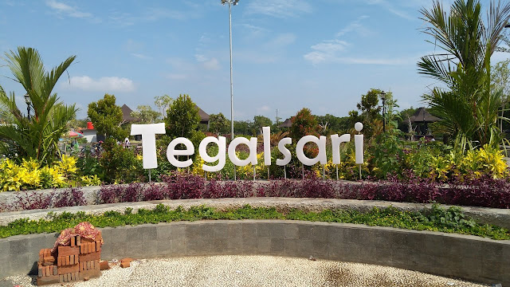

WISATA KOTA TEGAL
WISATA
Pantai Alam Indah

Pantai Alam Indah (disingkat PAI) adalah objek wisata pantai yang berlokasi di Kota Tegal, Jawa Tengah. Tempat rekreasi ini dikelola oleh Pemerintah Kota Tegal melalui Dinas Pemuda Olahraga Budaya dan Pariwisata. Dengan panjang sekitar 500 meter, mulai dari area Pelabuhan Tegal sampai dengan Universitas Pancasakti, Pantai Alam Indah menawarkan keindahan Laut Jawa yang tenang, dilengkapi beberapa fasilitas pendukung yang disediakan
Taman Pancasila
Taman Pancasila. Sebuah taman dalam kota yg berada di area Station Kota Tegal. Taman ini menjadi ikon menarik di kota Tegal. Berlokasi di area bangunan kota tua peninggalan Belanda yang masih kokoh dilestarikan sebagai bukti sejarah masalalu untuk generasi masakini. Bangunan ini menjadi tempat "kongkow" kaum remaja dan masyarakat dg waktu terbatas yakni antara sore jam 16.00 hingga pukul 20.00 WIB, berbagai hiburan dan aneka permainan utk anak anakpun tersaji menarik. setelah waktu yg ditentukan,keramaian akan ditertibkan oleh Pol PP yg menjaga ketertiban lalulintas. Meski demikian rasa "asyik" dan nuansa klasik tetap dpt dinikmati oleh para pengunjung. Untuk yg berminat silahkan bisa di coba.. Tetap patuhi protokol covid yah..!!
Alun Alun Kota Tegal
Alun Alun Kota Tegal Jawa Tengah adalah salah satu tempat wisata yang berada di desa tegal, kabupaten tegal, provinsi jawa tengah, negara indonesia. Wisata Alun Alun Kota Tegal Jawa Tengah adalah tempat wisata yang ramai dengan wisatawan pada hari biasa maupun hari liburan. Tempat ini sangat indah dan bisa memberikan sensasi yang berbeda dengan aktivitas kita sehari hari.
Wisata Alun Alun Kota Tegal Jawa Tengah memiliki pesona keindahan yang sangat menarik untuk dikunjungi. Sangat di sayangkan jika anda berada di kota tegal tidak mengunjungi wisata taman kota yang mempunyai keindahan yang tiada duanya tersebut.
Taman Tegal Sari

Taman Tegalsari adalah taman kota yang di hiasi tanaman-tanaman cantik, arena bermain anak, spot selfie, pemandangan sungai dan hutan bakau. Pengunjung bisa menikmati pemandangan, bersantai dan berburu foto cantik di sini. Untuk keluarga yang ingin momong anak, tempat ini juga menyediakan sarana bermain yang menyenangkan. Pengelola menyediakan beberapa fasilitas umum untuk menambah kenyamanan pengunjung. Seperti Toilet Umum, Tempat Duduk, Gazebo dan Area Parkir Kendaraan. Untuk masuk area taman ini, pengunjung tidak di kenakan biaya tiket masuk. Cukup membayar uang parkir kendaraan saja. Jika berminat untuk mengunjungi Taman Tegalsari, lokasinya berada di Tegalsari, Kecamatan Tegal Barat, Kota Tegal, Jawa Tengah.
Copyright © 2022 - Ilhan, Akbar, Yori, Kuncoro, All Rights Reserved.